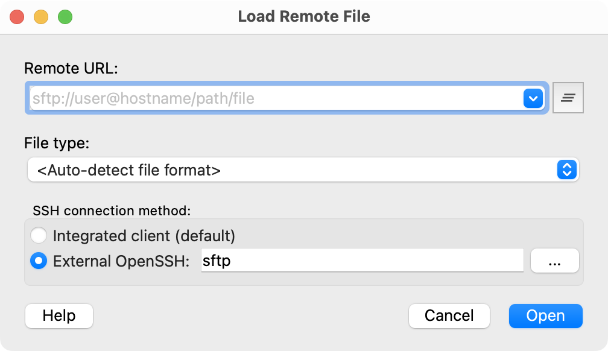

Remote file access
OVITO comes with built-in SSH and HTTP(S) clients for accessing files located on remote machines. This feature can save you from having to transfer files stored in remote locations, for example on an HPC cluster, to your local desktop computer first. To open a file located on a remote host, select from the menu.
The current version of OVITO does not provide a way to browse directories on remote machines. That means you need to directly specify the full path to the remote file as an URL of the form:
sftp://user@hostname/path/filename
Replace user with your SSH login name on the remote machine, hostname with the hostname of the remote machine, and /path/filename with the full path to the simulation data file to load. Note that the use of the “~” shortcut to a user’s home directory is not supported; you have to specify an absolute directory path.
You can also let OVITO download data from a web location by specifying an URL of the form:
https://www.website.org/path/filename
When connecting to the remote machine via SSH, OVITO will ask for the login password or the passphrase for the private key to be used for authentication. Once established, the SSH connection is kept alive until the program session ends. OVITO creates a temporary local copy of downloaded remote files before loading the data into memory to speed up subsequent accesses to the same simulation frames. The local data copies are cached until you close OVITO or until you hit the Reload button in the External File panel.
Note
OVITO’s built-in SSH client parses the ~/.ssh/config configuration file in your home directory if it exists to
configure the SSH connection.
OpenSSH client pro
{kind=link}
The integrated standard SSH client of OVITO is based on Libssh, an implementation of the SSH protocol that is distinct from the standalone command line tools (ssh & scp, parts of the OpenSSH system package) you are probably used to. Unfortunantely, Libssh does not support all authentication methods that commonly work with these OpenSSH utilities. In particular, smartcard-based and other two-factor authentication methods, requiring PKCS#11 extensions, won’t work with OVITO’s integrated SSH client.
For these systems, OVITO Pro provides an alternative SSH connection method that is based on the external sftp tool,
which is part of the OpenSSH suite and available on most systems. When this connection method is selected,
all authentication methods and other features configured in ~/.ssh/config will work as usual.
Troubleshooting connection problems
Establishing a connection between OVITO and the SSH server may fail if the client and server cannot agree on a common authentication and encryption method. OVITO’s built-in SSH client is based on the libssh library, which supports a specific set of SSH key exchange methods, public key algorithms, ciphers, and authentication methods (see here). During the handshaking process, both parties need to agree on at least one common choice from each of these categories to successfully establish an SSH connection.
Which SSH connection methods the server side supports depends on the specific configuration of your SSH server. Please consult the documentation for your remote system or contact the administrator of your remote host if you are not sure.
To diagnose possible connection problems, and to find out which set of SSH connection methods your server actually accepts, you can
set the environment variable OVITO_SSH_LOG=1 when you run OVITO. This will request the program to print verbose logging
messages to the terminal during a connection attempt. The log output should tell you more about why the handshaking process
fails.
On some platforms such as Windows, output sent to the terminal is not directly visible. In such a case you should additionally set the
environment variable OVITO_LOG_FILE=<filename> to redirect all log output of the program into a text file. On Windows, for example,
open the command prompt (cmd.exe) and start OVITO by entering the following commands:
set OVITO_LOG_FILE=%USERPROFILE%\ovito_log.txt
set OVITO_SSH_LOG=1
"C:\Program Files\OVITO Basic\ovito.exe"
Try loading a remote file via SSH. If the connection fails, have a look at the file ovito_log.txt, which should have been created
in your user directory. For further help, visit the online user forum or contact
OVITO technical support directly.